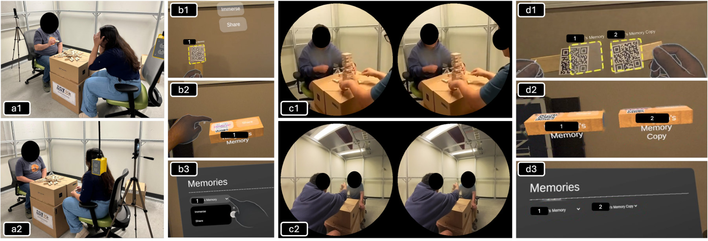

Abstract
Extended Reality (XR) enables immersive capture and re-experience of personal memories, yet how interface representations shape these experiences remains underexplored. We examine how users relive and share XR memories through three interaction approaches: (1) physical memory-linked objects, (2) virtual memory-linked objects, and (3) a conventional virtual gallery interface. In a within-subjects study (N = 24, 12 pairs), participants captured shared experiences using 360° video and later accessed and shared these memories across the three interfaces. We analyzed open-ended qualitative responses focusing on perceived value, enjoyment, usability, emotional attachment, and social connection. The findings reveal trade-offs: physical objects fostered stronger social connection and conversation through tangible exchange; virtual objects balanced engagement and usability; and the gallery interface was efficient but less personal. These results suggest that object-based representations—physical and virtual—support key social dimensions of XR memory experiences, offering lessons for designing future systems that emphasize shared meaning and interpersonal connection.